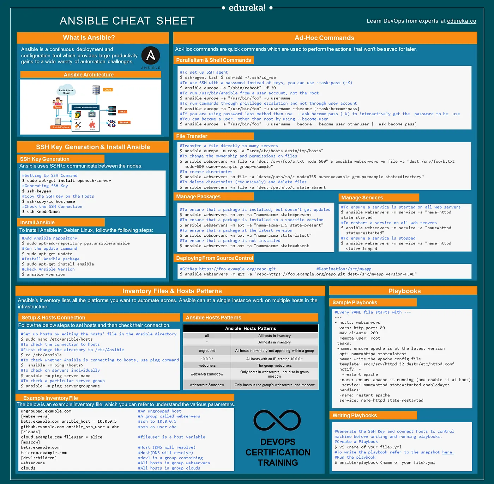

Ansible
Abstract |
Ansible |
Authors |
Walter Fan |
Status |
WIP as draft |
Updated |
2025-03-15 |
Ansible 概述
Ansible is a powerful open-source automation engine that simplifies deployment, orchestration, and cloud provisioning tasks. It employs a playbook, which is a descriptive file written in YAML, a programming language that is easy for humans to read and understand.
Ansible is specifically designed to handle multi-tier deployments efficiently. One of its key advantages is that it operates in an agentless manner, establishing connections between nodes using SSH.
Quick start
Setup SSH
#Setting Up SSH Command
$ sudo apt-get install openssh-server
#Generating SSH Key
$ ssh-keygen
#Copy the SSH Key on the Hosts
$ ssh-copy-id hostname
#Check the SSH Connection
$ ssh <nodeName>
Install Ansible
#Add Ansible repository
$ sudo apt-add-repository ppa:ansible/ansible
#Run the update command
$ sudo apt-get update
#Install Ansible package
$ sudo apt-get install ansible
#Check Ansible Version
$ ansible –version
Ansible Terms
Before we get into the important Ansible commands, first, let’s understand its basic terminology.
Server: An entity that provides service for our Ansible
Machine: A physical machine, a VM, or a container
Target machine: An end machine to be configured by Ansible
Task: An action
Playbook: A location where YAML files are written and executed
Ad-hoc Commands
An ad-hoc command is a command that we would use to do something really quick but would not want to save for later, i.e., we might not use this command in the future.
General syntax of an ad-hoc command:
Command hostgroup module/options [arguments]
Function |
Command |
|---|---|
To check the connectivity of hosts |
#ansible <group> -m ping |
To reboot hosts |
#ansible <group> -a “/bin/reboot” |
To check the host system’s info |
#ansible<group> -m setup | less |
To transfer files |
#ansible <group> -m copy -a “src=home/ansible dest=/tmo/home” |
To create a new user |
#ansible<group> -m user -a “name=ansible password= <encrypted password>” |
To delete a user |
#ansible<group> -m user -a “name=ansible state- absent” |
To check if a package is installed and to update it |
#ansible<group> -m yum -a “name=httpd state=latest” |
To check if a package is installed but not to update it |
#ansible<group> -m yum -a “name=httpd state=present” |
To check if a package is of a specific version |
#ansible<group> -m yum -a “name=httpd-1.8 state=latest” |
To check if a package is not installed |
#ansible <group> -m yum -a “name= httpd state= absent |
To start a service |
#ansible<group> -m service -a “name= httpd state=”started” |
To stop a service |
#ansible<group> -m service -a “name= httpd state=”stopped” |
To restart a service |
#ansible<group> -m service -a “name= httpd state=”restarted” |
参见
ansible-playbook
usage
ansible-playbook -i /path/to/my_inventory_file -u my_connection_user \
-k -f 3 -T 30 -t my_tag -M /path/to/my_modules -b -K my_playbook.yml
命令行选项说明:
-i - uses my_inventory_file in the path provided for inventory to match the pattern.
-u - connects over SSH as my_connection_user.
-k - asks for password which is then provided to SSH authentication.
-f - allocates 3 forks.
-T - sets a 30-second timeout.
-t - runs only tasks marked with the tag my_tag.
-M - loads local modules from /path/to/my/modules.
-b - executes with elevated privileges (uses become).
-K - prompts the user for the become password.